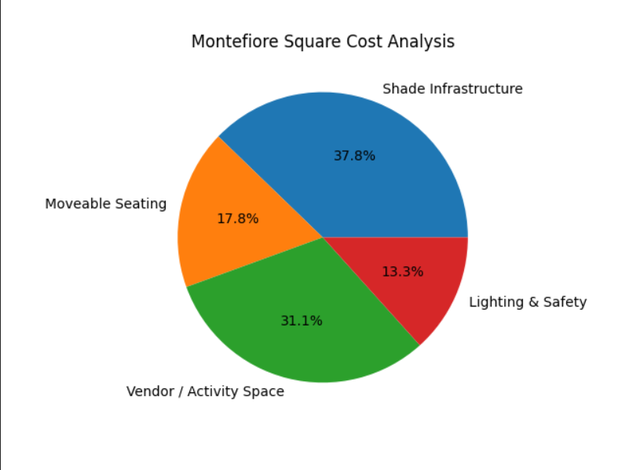

Project Overview
Montefiore Plaza was transformed into a 44,000 sq ft public space with a terraced lawn, new seating, lighting, landscaping, and major underground upgrades. This project evaluates both the visible improvements and the hidden infrastructure supported by NYC DOT and DEP.
The goal is to understand whether this investment improves quality of life, sustainability, and economic activity in Harlem.
Before Images


Before Gallery


Social & Environmental Impact
The plaza now supports community events, markets, performances, and everyday gathering. Increased foot traffic boosts local businesses.
New trees, gardens, and stormwater systems improve air quality, reduce heat, and help prevent flooding.
Infrastructure Upgrades
The redesign required replacing water mains, sewers, and drainage systems to prevent flooding and support long‑term sustainability.
New utilities power lighting, irrigation, and public amenities, supported by strong foundations and durable pathways.
After Images


Video
Budget Breakdown
| Category | Estimated Cost |
|---|---|
| Infrastructure Upgrades | $7,000,000 |
| Plaza Construction | $5,500,000 |
| Landscaping | $3,000,000 |
| Lighting & Amenities | $1,200,000 |
| Design & Labor | $1,000,000 |
| Total | $18,400,000 |

LINE GRAPH